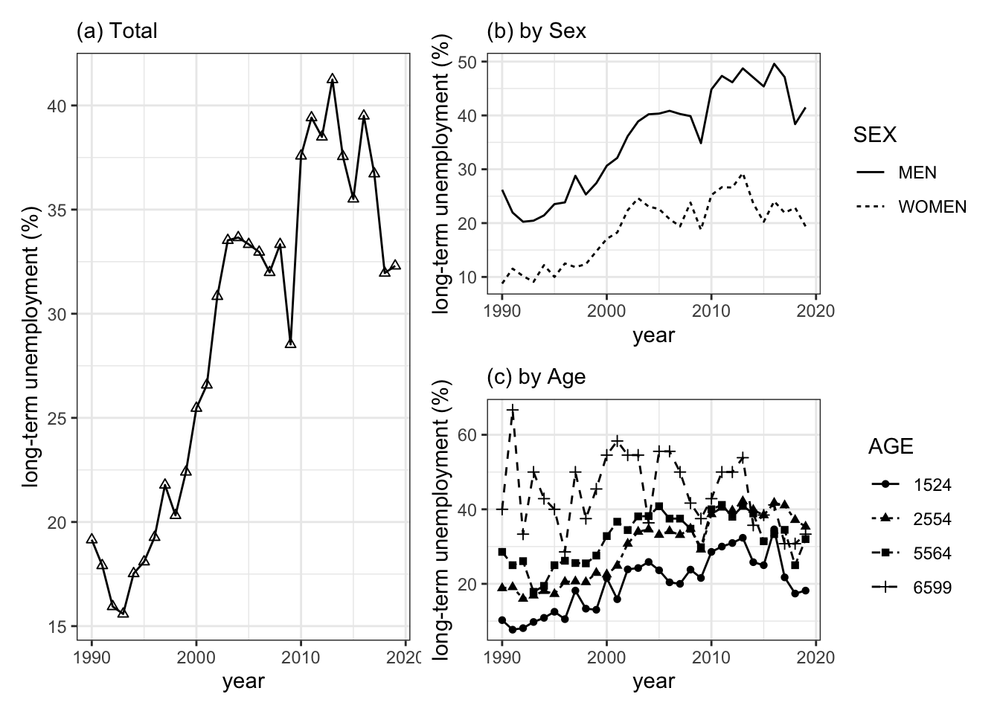

2.4 経済協力開発機構 - OECD
OECDが提供するデータは、もちろん、OECDのサイトOECD.Stat からも取得できます。同サイトに入ると、左側のウィンドウにテーマ別データ一覧が表示されており、ここから目的のデータを探すことができます。ウィンドウ上部にある検索ウィンドウからキーワード検索も可能です.
しかし、この方法ではRから離れブラウザでデータを検索し、データをダウンロードすることになります。これは煩わしい作業であることは言うまでもなく、データ分析のための再現性も難しくなるかもしれません。こうした問題に対処するために、RパッケージOECDを利用することが推奨されます。このパッケージによってOECDのAPIから動的で再現性の高い方法でデータをダウンロードすることができます.
2.4.1 RパッケージOECDの利用方法
それでは同パッケージをインストールしましょう。コンソール画面に次のように入力し、エンターキーを押してください。
# RパッケージOECDのインストール
install.packages("OECD")パッケージを利用するにはlibrary()で呼び出しておく必要があります。スクリプト画面に次のように入力し、実行しておきます。
# RパッケージOECDの呼び出し
library(OECD)2.4.1.1 データを探す - get_datasets(), search_dataset()
OECDのデータをダウンロードするにはデータ系列のidコードが必要となります。しかし、ほとんどの場合、正確なidコード情報を事前に保有していることは少ないと思います。そこで最初に、利用可能なデータセットとその説明を含むデータフレームをダウンロードし、その上で検索を始めるのがベストの方法です。これはget_datasets()関数で実行できます。
# OECDのデータフレームのリストを取得
get_datasets() %>%
# head()関数でデータフレームの冒頭部分を表示
head()## # A tibble: 6 × 2
## name url
## <chr> <chr>
## 1 Locational banking statistics https://www.bi…
## 2 Consolidated banking statistics https://www.bi…
## 3 Debt securities statistics https://www.bi…
## 4 Credit to the non-financial sector https://www.bi…
## 5 Credit-to-GDP gaps https://www.bi…
## 6 Debt service ratios for the private non-financial sector https://www.bi…head()関数によって最初の６行を表示させています。全体で1,392行×2列のデータフレームが取得されます。１列目はデータセットのid、２列目titleはデータセットのタイトル名です。これによってOECDにおいて、どのようなデータセットが利用可能かが分かります。
データセットの検索方法としてはsearch_dataset()関数を使ってキーワードで検索する方法もあります。たとえば、失業“unemployment”をキーワードに検索してみましょう。これを実行すると、コンソール画面に“unemployment”を含んだデータ等の一覧が表示されます.デフォルトでは大文字小文字を区別しません。
search_dataset("unemployment")## # A tibble: 10 x 2
## id title
## <chr> <chr>
## 1 DUR_I Incidence of unemployment by duration
## 2 DUR_D Unemployment by duration
## 3 AVD_DUR Average duration of unemployment
## 4 AEO2012_CH6_FIG4 Figure 4: Youth and adult unemployment
## 5 AEO2012_CH6_FIG29 Figure 29: Youth employment and unemployment by education …
## 6 AEO2012_CH6_FIG19 Figure 19: The trade off between vulnerable employment and…
## 7 PTRUB PTR for families claiming Unemployment Benefits
## 8 MIG_NUP_RATES_GE… Employment, unemployment, and participation rates by place…
## 9 NRR Net replacement rate in unemployment
## 10 PTRCCUB PTR for parents claiming Unemployment Benefits and using c…2.4.1.2 データセットのダウンロード - get_dataset()
それでは最初のデータセットDUR_I―Incidence of unemployment by duration (期間別の失業者発生比率％)―をダウンロードしてみましょう.データのダウンロードにはget_dataset()関数を使います.基本的な使い方は次のようになります,
get_dataset("dataset", filter = NULL, start_time = NULL, end_time = NULL,
pre_formatted = FALSE)この関数がとる主要な引数は以下のとおりです.
- dataset : ダウンロードするデータセットのidを入力します.
- filter= : NULLの場合、すべてダウンロードします.
- start_time = : データの開始時点.
- end_time = : データの終了時点.
この関数を使ってDUR_Iデータを取得し、それをunempというオブジェクトに容れるとします.もっとも簡単なコードは次のとおりです.
unemp<- get_dataset("DUR_I")str(unemp)でデータフレームの中をみると、8変数、155,924の観察値のデータセットがダウンロードされたことが分かります.str()関数はデータフレームの変数（列）や観測値（行）についての情報を出力させる関数です.
str(unemp)## tibble [160,111 × 8] (S3: tbl_df/tbl/data.frame)
## $ COUNTRY : chr [1:160111] "AUS" "AUS" "AUS" "AUS" ...
## $ SEX : chr [1:160111] "MW" "MW" "MW" "MW" ...
## $ AGE : chr [1:160111] "1519" "1519" "1519" "1519" ...
## $ DURATION : chr [1:160111] "UN1" "UN1" "UN1" "UN1" ...
## $ FREQUENCY : chr [1:160111] "A" "A" "A" "A" ...
## $ TIME_FORMAT: chr [1:160111] "P1Y" "P1Y" "P1Y" "P1Y" ...
## $ obsTime : chr [1:160111] "1978" "1979" "1980" "1981" ...
## $ obsValue : num [1:160111] 20 19.3 21 22.8 21.4 ...引数を指定した形でデータをダウンロードしてみましょう.引数filterを使って日本とドイツのデータ、引数start_tim,end_timeで期間を1990年から2019年のデータをダウンロードするとします.このためにはスクリプトに次のように入力するだけです.
unemp <- get_dataset("DUR_I",filter=list(c("JPN","DEU")),
start_time = 1990,end_time = 2019)また、たとえば、filter = “age”のように、変数についてもfilterを適用できます.
2.4.1.3 データ構造を調べる - get_data_structure()
ダウンロードしたデータの内容は、上述のように、str()関数やView()関数を利用して確認することができます.しかし、これだけではそれぞれの変数が何を意味するのか分からない場合があります.たとえば、DURATION変数が「（失業）期間」を表現していることは分かりますが、しかし、その変数がとる “UN1”, “UN3”といった値が何を意味しているかは分かりません.このためデータ構造をチェックする必要があります.
データ構造のチェックにはget_data_structure()関数を利用します.同関数は指定したデータシリーズの変数名とその説明を返します.
# DUR_Iのデータ構造の説明を取得、data_strに容れます.
data_str<-get_data_structure("DUR_I")
# str()関数でdata_strの中を見ます.
str(data_str,max.level = 1) ## List of 12
## $ VAR_DESC :'data.frame': 12 obs. of 2 variables:
## $ COUNTRY :'data.frame': 53 obs. of 2 variables:
## $ TIME :'data.frame': 53 obs. of 2 variables:
## $ SEX :'data.frame': 3 obs. of 2 variables:
## $ AGE :'data.frame': 7 obs. of 2 variables:
## $ DURATION :'data.frame': 5 obs. of 2 variables:
## $ FREQUENCY :'data.frame': 1 obs. of 2 variables:
## $ OBS_STATUS :'data.frame': 16 obs. of 2 variables:
## $ UNIT :'data.frame': 319 obs. of 2 variables:
## $ POWERCODE :'data.frame': 32 obs. of 2 variables:
## $ REFERENCEPERIOD:'data.frame': 100 obs. of 2 variables:
## $ TIME_FORMAT :'data.frame': 5 obs. of 2 variables:このさい、表示レベルをmax.level = 1を使い、１に指定しています.max.level=を利用せずに、str(data_str)と入力しても、類似した情報が得られますが、出力画面が煩雑になるので、この例ではmax.level=1に抑えています.
コンソール画面に上のように入力し、エンターキーを押すと、図のような出力結果が得られます.DUR_Iの説明を見ると、VAR_DESCを初めとし、あわせて12の変数があることが分かります.ここでDURATION変数の詳細を確認してみましょう.コンソール画面にdata_str$DURATIONと入力し、エンターキーを押してみてください. $記号はデータフレームの中の変数を指定する方法です.つまり、data_str$DURATIONは「データフレームdata_strの中の変数DURATIONを指定」を意味します.
#データフレームdata_strの中の変数DURATIONを指定.
data_str$DURATION ## id label
## 1 UN1 < 1 month
## 2 UN2 > 1 month and < 3 months
## 3 UN3 > 3 month and < 6 months
## 4 UN4 > 6 month and < 1 year
## 5 UN5 1 year and overこれにより変数DURATIONのとる値が何を意味しているかを示した一覧が出力されます.これをみると、変数DURATIONの値“UN1”は１月未満,“UN2”は１月以上３ヶ月未満の失業期間を示すことが分かります.
続けて変数AGEのデータ構造も確認しておきましょう.コンソール画面にdata_str$AGEと入力し、エンターキーを押します.
#データフレームdata_strの中の変数AGEを指定.
data_str$AGE ## id label
## 1 1519 15 to 19
## 2 1524 15 to 24
## 3 2024 20 to 24
## 4 2554 25 to 54
## 5 5564 55 to 64
## 6 6599 65+
## 7 900000 Totalこのように、AGE変数はid列に記載されているように1519や1524など７つの値をとります.そしてlabelに示されているように、それぞれ年齢階層に対応しています.たとえば、6599という値は65+と表示されていますので、65歳以上ということが分かります.つまり、65歳以上の失業者数です.年齢に関係ない総数は900000という数値で表現されています.
さらに、失業者の性別を表現する変数SEXをチェックしておきましょう.
# データフレームdata_strの中の変数SEXを指定
data_str$SEX ## id label
## 1 MEN Men
## 2 WOMEN Women
## 3 MW All persons変数SEXは３つの値をとることが分かります.MEN(男性)、WOMAN(女性)およびMW(両者の合計)です.
2.4.2 応用例―長期失業者推移の可視化
上でチェックしたデータ構造を利用し、失業問題でとりわけ問題となる長期失業者の推移を調べてみましょう.この例では最初にドイツ、フランス、日本およびアメリカの長期失業者の推移を比較します.その上で日本経済の長期失業に焦点を当てて考察します.作業手順は以下のようになります.
- 手順1 長期失業者の抽出 ― filter(), select()
- 手順2 文字列型から整数型へのデータの型の変更 ― as.integer()
- 手順3 長期失業者のプロット―ggplot2による可視化
手順1 長期失業者の抽出 ― filter(), select() 最初に、フランス、ドイツ、日本およびアメリカのデータをダウンロードします.そしてそれをunempというオブジェクトに格納します.
unemp <- get_dataset("DUR_I", filter = list(c("DEU","FRA","JPN","USA")),
start_time = 1990,end_time = 2019)次に、変数DURATIONを使って失業者に占める長期失業者のシェア（%)だけを抽出します.前掲のように長期失業者（１年以上）は“UN5”の値をとります.また、ここでは年齢別は無視します.年齢階層を無視した場合、変数AGEは“900000”の値をとります.さらに、男女合計の失業者を利用しますので変数SEXは“MW”の値をとるものを選択します.結果をlong_unempと名付けたオブジェクトに容れます.なお、DURATION, AGE,SEX変数の値は文字列ですので,“”を付けて指定する必要があります.条件にあった行（観察値）の抽出にはdplyrのfilter()関数を利用します. この関数の書き方はfilter(データフレーム名,抽出条件)です.ここではパイプ(%>%)でデータフレーム名をfilter()関数に渡しますので、filter()関数の引数は抽出条件だけを入力します.
long_unemp <- unemp %>%
# filter()関数を使ってDURATIONの値がUN5（失業期間１年以上）, AGEの値が900000（総数）、SEXの値がMW（男女計）を指定
filter(DURATION == "UN5", AGE == "900000", SEX == "MW") これで長期失業者数データを取得できます.View(long_unemp)でデータフレームlong_unempを表示できます.ここでは長期失業者の推移を検討するだけですので、必要な変数は国名変数COUNTRY, 観察時点変数obsTIME,および観察値変数ovsValueの３つだけです.select()関数を使って３つの変数だけを取り出します.上述のコードにさらにselect()関数をパイプ(%>%)でつなげて３つの変数だけを選択します.
long_unemp <- unemp %>%
filter(DURATION == "UN5", AGE == "900000", SEX == "MW") %>%
select(COUNTRY, obsTime, obsValue)select()関数では変数名の変更も可能です.obsTimeをyear、obsValueをvalueという変数名に変更しておきます.これを加えて上のコードを書き直すと次のようになります.
long_unemp <- unemp %>%
filter(DURATION == "UN5", AGE == "900000", SEX == "MW") %>%
select(COUNTRY, year = obsTime, value = obsValue)なお、変数名の変更はrename()関数を使ってもできます.rename（）関数の使い方は
rename(新しい変数名 = 古い変数名)上のコードにパイプ（%>%）でつなげてrename()関数を使うと、次のように書くことができます.
long_unemp <- unemp %>%
filter(DURATION == "UN5", AGE == "900000", SEX == "MW") %>%
select(COUNTRY,obsTime,obsValue) %>%
rename(year = obsTime, value = obsValue)手順2 文字列型から整数型へのデータの型の変更 ― as.integer()
これで３つの変数―COUNTRY, year, value―を持つ、データフレームlong_unempが出来上がりました.このデータフレームをstr(long_unemp)でみると、国を表現するCOUNTRY変数と暦年を表現するyearが文字列データであることが分かります.$ COUNTRY: chr, $year: chrとなっていることに気づくと思います.「chr」はcharacterの略で文字列データであることを示しています.つまり、yearは1990, 1991といった数値ですが、Rはこれを文字として理解しています.また、文字列型のデータは“”で囲まれた形で表記されます.
str(long_unemp)## tibble [120 × 3] (S3: tbl_df/tbl/data.frame)
## $ COUNTRY: chr [1:120] "FRA" "FRA" "FRA" "FRA" ...
## $ year : chr [1:120] "1990" "1991" "1992" "1993" ...
## $ value : num [1:120] 38.1 37.3 36.2 34.2 38.5 ...文字列データのままでは以下の処理が難しくなりますので、これを数値データ―整数データ―に変換します.データの型を整数に変換するにはas.integer()関数を利用します.この関数の引数に、データフレームlong_unempの中のyearを指定します.データフレームの中の特定の変数列を指定するには「データフレーム名$変数列名」です.
# year変数のデータの型を文字列型から整数型に変換.
as.integer(long_unemp$year) さらに、この型を変換したデータyearをもとのデータフレームに容れます.
long_unemp$year <- as.integer(long_unemp$year)これは次のような処理を行っています.as.interger（）関数を使ってデータフレームlong_unempの中のyear変数を整数型に変換し、その結果を割当演算子（←）を使ってデータフレームlong_unempの中のyear変数に割り当てます（置き換えます）.コンソール画面でstr(long_unemp)と入力し、エンターキーを押してみてください.
str(long_unemp)## tibble [120 × 3] (S3: tbl_df/tbl/data.frame)
## $ COUNTRY: chr [1:120] "FRA" "FRA" "FRA" "FRA" ...
## $ year : int [1:120] 1990 1991 1992 1993 1994 1995 1996 1997 1998 1999 ...
## $ value : num [1:120] 38.1 37.3 36.2 34.2 38.5 ...“$year : int”において理解されるように、変数yearは文字列型chrから整数型intに変わっています.intはintenger（整数）の略です.また文字列型の変数だったときには年数はすべて“”で囲まれていましたが、変数の型を変更した結果,""も消えています.
手順3 長期失業者のプロット―ggplot2による可視化
それでは４カ国の長期失業者のシェアの推移のグラフを描き、比較してみましょう.グラフの作成にあたってはRパッケージggplot2を利用します.
ggplot2でのグラフの作成方法は,レイヤーをプラス記号（＋）で重ねて行くということがポイントです.最初のレイヤーはもっとも基本的なもので、グラフを描画するための座標平面を作成します.ここでは引数に、利用するデータフレーム名、aes()の中にx軸、y軸に採用するデータを指定します.長期失業者の推移を描くことが目的ですので、x軸の変数にはyear,y軸の変数には長期失業者のシェアvalueを指定します.
ggplot(data = long_unemp, mapping = aes(x = year,y = value))これにデータを線で描画するために、geom_line()のレイヤーを重ねます.そのさい国ごとに異なった線種を使うためにlty =を利用し、lty = COUNTRYと指定します.
geom_line(mapping = aes(lty = COUNTRY))さらに、横軸、縦軸ラベルやタイトルを指定するためにlabs()レイヤーを重ねます.この例ではlabs()によってy軸のタイトル(y=)、サブタイトル（subtitle=）を指定しています.そして最後に、背景の種類を指定し、重ねています.背景はシンプルな白黒背景利用するためにtheme_bw()を使っています.すべてのコードをまとめると、以下のようになります. これを実行すると,グラフが描かれます.
ggplot(data = long_unemp,mapping = aes(x = year,y = value))+
geom_line(aes(lty = COUNTRY))+
labs(
y="long-term unemployment (%)",
subtitle = "Share of long-term unemployment ( % of total ) "
)+
theme_bw()
このグラフから理解されるように、2000以前にはヨーロッパでは長期失業が高水準にあり、対照的に、日本とアメリカでは長期失業の水準は低い水準にあったことが分かります.しかし、この構図は1990年後半以降、変化しています.日本経済では長期失業者の割合が急速に高まり、ヨーロッパ水準に近づきつつあります.リーマンショックの影響でアメリカでも一時的に長期失業者が急増しますが、その後は急速に減少して行きます.しかし、日本では高止まりしていることが見て分かります.
現在では、日本でもフランスやドイツのように、職を探し続けても１年以上仕事が見つからない人が３割～４割に達しています.そこで日本経済だけに注目し、さらに詳しくみて行くことにしましょう.長期失業者がどの年齢階層で増加しているのか、また男女別で相違はあるのか、という２つの問題を考えてみます.この問題に答えるために、以下のような３つのグラフ-パネル(a)(b((c)-を作成します.
グラフのパネル(b)を見ると、長期失業者比率の動きには男女別でそれほど大きな違いは見られないようです.男女ともに長期失業者が1990年台中頃から上昇していきますが、男性失業者は40パーセント台、女性失業者は20パーセント台で止まりつつあるようです.したがってこうした長期的な動向は男女に共通の要因―たとえば、政策の変化―が影響していると想像されます.しかし、両者の水準は大きく異なり,失業者に占める長期失業者の比率は男性労働者が女性労働者を大きく上回ります.これには男女間の求職意欲の相違、雇用形態の違い、産業別の男女別就業比率等、さまざまな性差に特有の要因が影響としていると思われます.
パネル(c)は年齢別の推移を描いています.特徴的なのは65歳以上の高齢者層（6599）が他の年齢層に比べ一貫して高い水準にあったにもかかわらず、2020年に近づくにつれて減少してきたという点です.これと対照的に、1990年代から中核的な労働力層―25~54歳（2554）,55~64歳（5564）―の長期失業者比率が上昇してきています.失業の長期化は労働者の技能を引き下げると言われています.今後、この中核労働者層の失業が長期化すれば、労働者の技能の陳腐化ひいては生産性の停滞のいっそうの悪化へといたるかもしれません.
パネル(a)(b)(c)のグラフの作成スクリプトを紹介しておきましょう.
パネル(a)
最初に、get_data()関数を利用し、日本経済の期間別失業者比率をダウンロードします.ここでは日本一カ国ですので、filter = list()の中に日本の国別コードJPNを指定するだけです.また、結果をunemp_jpというオブジェクトに格納します.
unemp_jp <- get_dataset("DUR_I", filter = list("JPN"),start_time = 1990,end_time = 2019)unemp_jpが基本のデータセットになります.最初に、性別、年齢別に関係のなく全体の長期失業者を抽出します.このため、filter()関数により長期失業者を指定します.これはDURATION変数の値が“UN5”と一致するものを選択します.次に、性別は全体ですので、SEX変数において両性の合計を示す“MW”を指定します.最後に、同じく年齢階層に関係なく全体を指定します.このためにAGE変数において値が“900000”のものを選択します.
次に、select()関数によって必要な変数を取り出します.必要な変数はAGE, SEX, obsTime, obsValueの４つです.この４変数の名前をselect()関数の中に入力します.このさい、obsTime, obsValueの名前を、それぞれyear, valueという短い名前に変更しています.これはselect()関数の中で“新しい変数名 = 古い変数名”で変更できます.
long_unemp_jp_totl <- unemp_jp %>%
filter(DURATION == "UN5",SEX == "MW",AGE == "900000") %>%
select(AGE,SEX,year = obsTime, value = obsValue) 最後に、以上の結果をlong_unemp_jp_totlというオブジェクトに格納します.しかし、１つだけ困ったことがあります.str(long_unemp_jp_totl)で確認できるように、year変数は数値データではなく、文字列データとなっています.そこでas.integer()関数を利用し、整数型に変更し、もとのyearに容れます.
long_unemp_jp_totl$year <- as.integer(long_unemp_jp_totl$year)long_unemp_jp_totl$yearはデータフレームlong_unemp_jp_totlの中のyearを指定しています.$はデータフレームの中の特定の変数を指定するさいに利用する記号です.
これでパネル(a)のグラフを描くためのデータセットが出来上がりました.グラフを描くためにはRパッケージggplot2を利用します.
total <- ggplot(long_unemp_jp_totl,aes(x = year,y= value))+
# データの描画を線に指定
geom_line()+
# データの点の形をshape=によって描画する点の形を指定(2は三角形を意味する).
geom_point(shape = 2)+
labs(
y="long-term unemployment (%)",
subtitle = "(a) Total "
)+
theme_bw()ここではggplot2を利用して描いたグラフを“total <-”によって、totalという名前をつけたオブジェクトに格納しています.グラフをtotalというオブジェクトに入れましたのですぐにはグラフは出力されません.グラフを表示させるにはコンソール画面にグラフのオブジェクト名totalと入力し、エンターキーを押すか、スクリプト画面に同じようにtotalと入力し、実行[Run]する必要があります.
パネル(b)
パネル(b)は性別の長期失業者比率を描きます.このためfilter()関数によって長期失業者を抽出し、両性の合計を除外し、また年齢別も無関係ですので総数の値（行）だけを抽出します.
長期失業者の抽出にはDURATION変数で“UN5”の値を指定します.次に性別が重要ですので、両方の性の合計を示す“MW”をSEX変数から除外します.このためには「SEX == “MW”」の前に「!」（論理演算子の否定）をつけておきます.これによってSEX変数から両性の合計を示すの値（行）が除外されます.最後に、AGE変数のうち総数を示す値“900000”を指定します.この結果filter()関数の引数は以下のようになります.
filter(DURATION == "UN5",!SEX == "MW",AGE == "900000")次に、select()関数によってグラフ作成に必要な変数だけを選択します.そのさいあわせて変数の名前も変更しておきます.
select(AGE,SEX,year = obsTime, value = obsValue）以上をパイプ(%)でつなげて全体を書くと次のようになります.
long_unemp_jp_sex <- unemp_jp %>%
filter(DURATION == "UN5",!SEX == "MW",AGE == "900000") %>%
select(AGE,SEX,year = obsTime,value = obsValue) ここでもyear変数の型は文字列となっています.そこでas.integer()関数を利用し、整数型に変更し、もとのyearに容れます.
long_unemp_jp_sex$year <- as.integer(long_unemp_jp_sex$year)これでパネル（b）のグラフ作成に必要なデータフレームlong_unemp_jp_sexが出来上がりました.残りの作業はパネル(a)の作成と同じように、ggplot2を利用し作成します.ここでは出来上がったグラフをsexというオブジェクトに容れます.
sex<- ggplot(data = long_unemp_jp_sex,mapping = aes(x = year,y= value))+
geom_line(aes(lty = SEX))+
labs(
y="long-term unemployment (%)",
subtitle = "(b) by Sex "
)+
theme_bw()パネル(c)
パネル(c)は年齢階層別の長期失業者比率を描きます.このためfilter()関数によってDURATION変数のうち長期失業者の値・行（“UN5”）、両性の合計を示す値・行（“MW”）を抽出します.ここで年齢階層が重要ですので、AGE変数のうち総数を示す値・行（“900000”）を除外します.これを実行するfilter（）関数は次のようになります.
filter(DURATION == "UN5",SEX == "MW",!AGE == "900000")残りのスクリプトはパネル(a)(b)と同じです.
long_unemp_jp_age <- unemp_jp %>%
filter(DURATION == "UN5",SEX == "MW",!AGE == "900000") %>%
select(AGE,SEX,year = obsTime, value = obsValue)
long_unemp_jp_age$year <- as.integer(long_unemp_jp_age$year)グラフ作成のためのスクリプトも同じです.ここではggplot2作成されたグラフはageというオブジェクトに格納されています.
age <- ggplot(data = long_unemp_jp_age,mapping = aes(x = year,y = value))+
geom_line(aes(lty = AGE))+
geom_point(aes(shape = AGE))+
labs(
y="long-term unemployment (%)",
subtitle = "(c) by Age "
)+
theme_bw()３つのグラフのレイアウト- patchwork
３つのグラフはそれぞれtotal, sex, ageというオブジェクトに入っています.コンソール画面もしくはスクリプト画面にグラフを格納したオブジェクト名を入力し、エンターキーを押すか、実行[Run]すれば、plotウインドウにグラフが出力されます.
３つのグラフのレイアウトを整えるために、ここではRパッケージpatchwork を利用しています.
# patchworkのインストール
install.packages("patchwork")
# patchworkの呼び出し
library(patchwork) 使い方はとても簡単です.グラフを２つ横に並べて描きたい場合にはグラフのオブジェクト名をプラス記号（＋）でつなげるだけです.たとえば、sex+ageと入力し、実行[Run]します.積み重ねたい場合は割り算記号（/）を使います.また、横に配置したい場合はパイプライン記号（｜）を使います.次のように入力することでレイアウトを決定しています.
total|sex/age
2.4.3 応用例―時系列データの分析
次に日本経済の為替レートデータを使って簡単な時系列分析を行ってみましょう.
(1)為替レートデータの取得
最初に、get_dataset()関数を使って日本円の為替レート（1ドルの円表記）データをダウンロードします.
exchangeRate <- get_dataset("REFSERIES_MSIT",filter = list("JPN"),
start_time = 1990, end_time = 2018)head()関数でデータフレームexchangeRateの内容を表示させると、４つの変数の存在が分かりますが、ここで必要なのは観察時点と観察値だけです.そこでselect()関数を使って２つの変数だけを選択します.また、観察時点は、年次、４半期および月次が混在しているようです.そこでfilter()関数を使って月次データだけを取り出すことにします.filter()関数を適用するさいに、注意しないといけないのはobsTime変数が文字列型だということです.
head(exchangeRate)## # A tibble: 6 × 4
## COU TIME_FORMAT obsTime obsValue
## <chr> <chr> <chr> <dbl>
## 1 JPN P1Y 1990 145.
## 2 JPN P1Y 1990-Q1 148.
## 3 JPN P1Y 1990-01 145.
## 4 JPN P1Y 1990-02 146.
## 5 JPN P1Y 1990-03 153.
## 6 JPN P1Y 1990-Q2 155.以下のスクリプトではselect()関数で２つの変数列―obsTimeとobsValue―選択し、さらにfilter()関数で月次データの行だけを取り出しています.この結果はhead(exchangeRate_jpn)で確認できます.
exchangeRate_jpn <- exchangeRate %>%
select(obsTime, obsValue) %>%
filter(str_detect(obsTime,"-"),!str_detect(obsTime,"Q")) このコードでは、最初にselect(obsTime,obsValue)を使って２つの変数列―obsTime, obsValue―を抽出しています.次に、filter()関数によって月次データの行だけを抽出しています.
filter()関数では2つの抽出条件を入力しています.月次データは“1990-01”のようにハイフンをもったデータです.最初の条件はそこに注目し、obsTime変数のうちハイフン記号（“-”）を持つ値（行）だけを抽出しています.ここで特定の文字列を探すstr_detect()関数を利用しています.関数の書式はstr_detect(対象となる変数名,“探す文字列”)ですので、str_detect(obsTime, “-”)としています.しかし、この抽出条件だけでは“-Q3”といったようなハイフン記号つき四半期データも抽出されてしまいます.そこで第２の抽出条件str_detect(obsTime,”Q”)によってobsTime変数の値（行）のうち“Q”を有するデータを抽出し、その前に否定を意味する“!”を付けることによって四半期データを示すデータ―Q1,Q2,Q3,Q4つきデータ―の値（行）を除外しています.
一連の処理はパイプ（%>%）でつなげてあり、最終的に、結果をexchangeRate_jpnというオブジェクトに格納しています.str()でこの結果を表示してみましょう.
str(exchangeRate_jpn)## tibble [288 × 2] (S3: tbl_df/tbl/data.frame)
## $ obsTime : chr [1:288] "1990-01" "1990-02" "1990-03" "1990-04" ...
## $ obsValue: num [1:288] 145 146 153 158 154 ...データセットは288行×2列からなることが分かります.
(２) クラスの変更―data.frameクラスからtsクラスへ
コンソール画面にclass(exchangeRate_jpn)と入力し、エンターキーを押してみてください.
class(exchangeRate_jpn)## [1] "tbl_df" "tbl" "data.frame"class()関数はオブジェクトexchangeRate_jpnがどのクラスに属するかを表示します.出力結果―[1] “tbl_df”, “tbl”, “data.frame”― はこのexchangeRate_jpnがデータフレームのクラスに属することを示しています.
オブジェクトはクラスという属性を持ちます.Rの統計関数の多くはジェネリック型generictと呼ばれる関数です.クラスはこのジェネリック関数を使うさいに利用されます.summary()やplot()といった頻繁に利用される関数もジェネリック関数です.ジェネリック関数summary()は要約作成関数ですが、たとえば、hist()の出力に対してsummary()関数を使うと、それに合わせた要約を作成し、回帰関数lm()の出力に対してsummary()を呼び出すと、lm()に適した要約を作成します.つまり、Rはオブジェクトのクラスを基礎に、そのクラスに適した形でジェネリック関数をオブジェクトに適用します.plot()関数もジェネリック関数ですので、ほぼすべてのRオブジェクトに使うことができます.Rはオブジェクトのクラスを基礎に適切なプロット関数を見つけ出します.Rがオブジェクト指向言語と呼ばれる所以です.
この例でのオブジェクトexchangeRate_jpnは、上の出力結果が示すように、データフレームに属するクラスです.時系列データを扱うにはデータフレームクラスよりもts(もしくはxts)というクラスが便利です.そこでexchangeRate_jpnのクラスを変更することにします.時系列オブジェクトを作成するには関数ts()を用います. この関数の基本的な用法は次のようになります.
ts(data = , start = , end = , frequency = )基本的な引数は次の３つです.
- data = 観測された時系列値のベクトルまたは行列を指定．
- start = 最初の観測の時刻を指定します. end = startと同じ方法で指定された最後の観測時刻.
- frequency = 単位時間あたりの観察値の数
為替レートの値(exchagneRate_jpnの中のobsValue)をtsクラスに変換し,その結果をyen_exchangeRateに容れます.
yen_exchangeRate <- ts(data = exchangeRate_jpn$obsValue, start = 1990, end = 2019, frequency =12)これで時系列データが作成されました.class(yen_exchangeRate)で確認すると、オブジェクトyen_exchangeRateがtsクラスに属することが分かります.
class(yen_exchangeRate)## [1] "ts"(3)RパッケージTSstudioを利用した時系列データ分析
それでは日本経済の為替レートの時系列データyen_exchangeRateを分析してみましょう.そのために時系列データ分析用RパッケージTSstudioを利用することにします.最初に、このパッケージをインストールします.コンソール画面に次のように入力し、エンターキーを押してください.
install.packages("TSstudio") さらに、library()関数を使い呼び出します.スクリプト画面に次のように入力し、実行[Run]します.
library(TSstudio)これでTSstudioに用意されているさまざまな時系列データ分析ツールが利用できるようになりました.最初に、為替レートの時系列データyen_exchangeRateの情報を取得してみましょう.このためにはts_info()関数を用い、引数に時系列データ名を入力するだけです.
ts_info(yen_exchangeRate)## The yen_exchangeRate series is a ts object with 1 variable and 349 observations
## Frequency: 12
## Start time: 1990 1
## End time: 2019 1この結果、上のように時系列データに関する情報がコンソール画面に出力されます.
次に、為替レートをプロットしてみましょう.この処理はts_plot()関数を利用するだけです.用法は通常のplot()関数と同じです.このコードを実行することにより、プロット画面にグラフが出力されます.
ts_plot(yen_exchangeRate)為替レートの推移をみると、2010年台後半より急激にドルに対して円が低下してきていることが分かります.時期的には、第2次安倍政権の誕生(2012年12月)の時期に一致しています.同内閣が採用した異次元の金融緩和政策が功を奏した結果と思われます.
時系列データの分析の目的には、たとえば、季節パタンがあるか、トレンドはどのようになっているか、構造変化は発生しているか、といった問題に答えることがあげられます.こうした問題に答えるために、時系列データを分解してみましょう.このためにts_decompose()関数を利用します.この関数は時系列データを、トレンド成分、季節成分、およびランダム成分に分解し、各成分を可視化します.基本的なコードは以下のとおりです.
ts_decompose(ts.obj, type = “”, showline = TRUE)この関数は３つの引数を取ります.
- ts.objの箇所には時系列データ名を入力します.ただし、ここにはtsクラスに属するオブジェクトでなければなりません.オブジェクトのクラスを変更したのはこのためです.
- typ = “”は季節成分のタイプを設定します.“additive（加法）”,“multiplicative（乗法）”, “both（両者）”のいずれかを選択できます.デフォルト（既定値）はadditive（加法）です.
- showline = は論理値をとり、プロット間に分離線を追加します（デフォルト（既定値）はTRUEです）.
ここでは引数は時系列データの指定以外、既定値を利用し、次のように入力します.すると、以下のグラフを得ることができます.
ts_decompose(yen_exchangeRate)為替レートの変動はトレンドを見ると、1990年台前半には低下傾向を示し、その後2000年台半ばまで上昇し、安定しているようです.しかし、2000年台半ばから低下傾向に入り、2010年台初頭に急激に上昇していることが理解されます.為替レートの変動はトレンドによって説明されるようです.また、当然ですが、季節に特有のパタンを見出すことも難しいようです.つまり、年を超えて、同一の季節変動パタンは存在しないようです.この点を確認するために、時系列の季節パタンと時系列推移のグラフを描いてみましょう.
以下の図はts_surface()関数を利用して描いたグラフです.この図はx軸に年、y軸に月、z軸に為替レートを描いた図です.ここにおいて理解されるように、1990年から2019年をつうじて類似した季節変動パタンは存在しないようです.
ts_surface()関数の利用法は次のようになります.
ts_surface(tsクラスのオブジェクト)関数の引数ts.objに時系列データ名を入力するだけです.ただし、この場合も時系列データはtsクラスのオブジェクトでなければなりません.
ts_surface(yen_exchangeRate)通常のデータの基本的な特徴を表す統計量として分散や相関があります.これと同じように時系列データの特徴を捉える自己相関と自己共分散と呼ばれる統計量があります.
自己相関(autocorrelation)とは、異なる時点での同一変数（時系列データ）の相関係数です.たとえば、今月の為替レートは１月前の為替レートと関連しているかどうか、ということを自己相関は示します.したがって今月の為替レートと先月のそれとの間に大きな正の自己相関が観察されれば、１月前の為替レートが高いとき、今月の為替レートも高くなることが理解できます.
TSstudioには自己相関係数をグラフ化するts_cor()が用意されています.ts_cor()関数を実行すると、縦軸に自己相関係数、横軸にラグ―１ヶ月前、２ヶ月前、３ヶ月前…― をとったいわゆるコレログラムCorrelogramと呼ばれるグラフが出力されます.ts_cor()関数の基本的な書き方は次のようになります.
ts_cor(ts.obj, type = "both", seasonal = TRUE, ci = 0.95,
lag.max = NULL, seasonal_lags = NULL)- ts.ob この引数にはtsクラスの時系列データを指定します.
- type = "“:”"にacf,pacf,あるいはbothの文字列を入力します.これによって出力させるグラフを指定します
- acfはACF（自己相関係数）, pacfはPACF（偏自己相関係数）をプロットします.両者をプロットさせたい場合はboth（デフォルト既定値）を指定します.
- seasonal = : =にブール値を入力します.TRUE（デフォルト既定値）の場合、季節ラグを色付けします.
- ci =: 推定値の有意水準(0から1の間の数値)を指定します. デフォルト（既定値）は0.95に設定されています
- lag.max = : acfを計算するための最大ラグを指定. デフォルト（既定値）は 10*log10(N/m). ここで N は観察値の数であり，m は系列の数です．系列内の観察値数よりも1つ少ない値に自動的に制限されます.
- seasonal_lags =: 整数のベクトルをとり、（系列の主要な季節的ラグの他に）特定の周期的なラグを強調します．たとえば、月次系列（頻度12）の場合、引数を3に設定すると、四半期のラグが強調されます.
それではts_cor()関数を利用し、日本経済の為替レートのコレログラムを描いてみましょう.
ts_cor(yen_exchangeRate,type = "acf")ここではtype引数にacfを指定している以外、既定値を利用しています.これを実行すると、グラフが出力されます.
ラグがゼロのときは今月の為替レートと今月の為替レートの相関をとることになりますので、言うまでもなく１になります.コレログラムからわかるように、ある月 の値が大きければ、その１ヶ月後の値も大きくなっています.そのために、連続する ２ヶ月間の自己相関が高いことが分かります.しかし、タイムラグを長くなるにつれて、自己相関は徐々に低下して行きます.
ts_cor()関数の出力結果で観察されるように、為替レート系列は直近の為替レート系列と強い線形関係を持っていることが分かります.系列とそのラグの関係は,系列とそのラグの間の相関関係をグラフ化するts_lags()関数を使うことでより直感的に確認できます.ts_lags()関数の基本的なコードは以下のようになります.
ts_lags(ts.obj, lags = 1:12,n_plots = 3)ts.obj にはtsクラスの時系列データを指定します. lags = ラグの範囲を指定する整数値を入力します.デフォルト（既定値）は12です. n_plots = 1行あたりのプロット数を指定する整数値を入力します.
それではラグの値を３ヶ月、６ヶ月、12ヶ月、そして24ヶ月に指定し、グラフを描いてみましょう.１から12のラグを連続的に指定するには“1:12”を使うことでできますが、４つのラグを指定する場合にはc（）を使います.
ts_lags(yen_exchangeRate,lags = c(3,6,12,24))これを実行すると、為替レートデータ系列とそのラグ―４つのラグ―との相関が出力されます.グラフから理解されるように、lag 3でもlag 6でもかなり強い相関があることが視覚的に理解できます.しかし、lag 12でも相関の存在を見ることができるものの、両者の相関はかなり弱くなっています.lag 24になると、ほとんど相関は観察されません.
本項では時系列データの簡単な分析方法―基本的に記述的分析―を紹介してきました.あわせてR言語におけるクラスという概念も紹介しました.オブジェクトはすべてクラスという属性を持ち、それがジェネリック関数の利用にあたって重要な役割を果たすことも理解できたと思います.
参考文献
- 北川源四郎『Rによる時系列モデリング入門』岩波書店, 2020年.
- 村尾博『Rで学ぶVAR実証分析 – 時系列分析の基礎から予測まで』オーム社, 2019年.